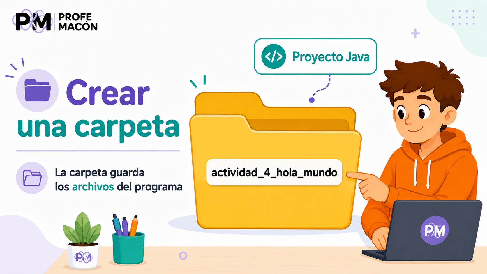
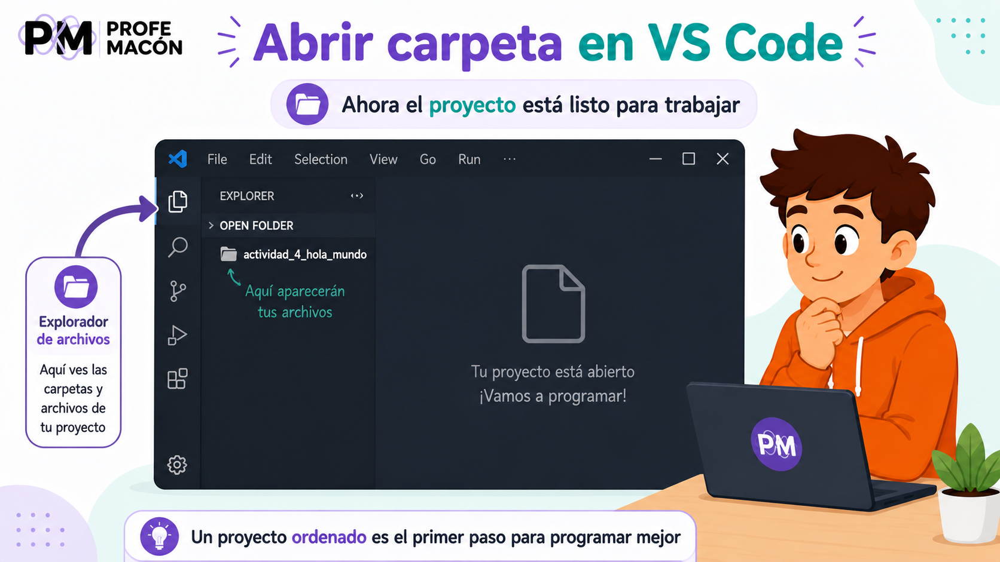
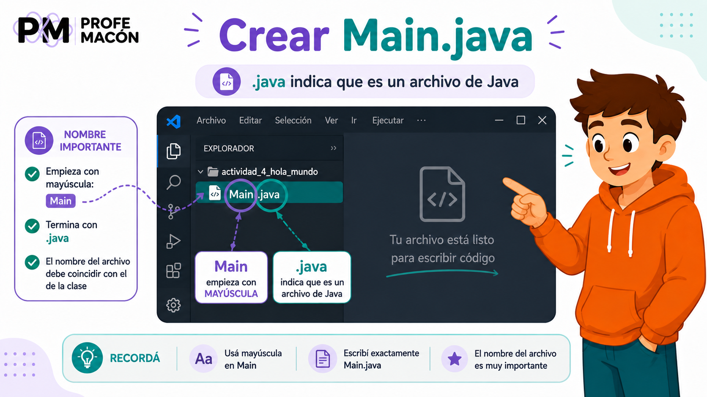
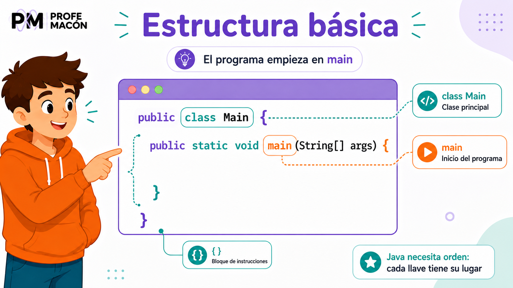
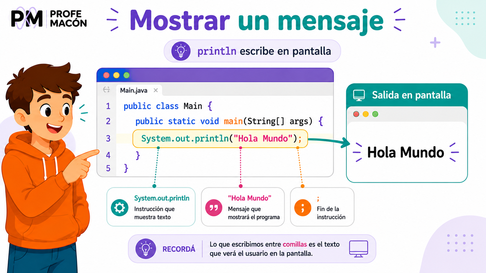
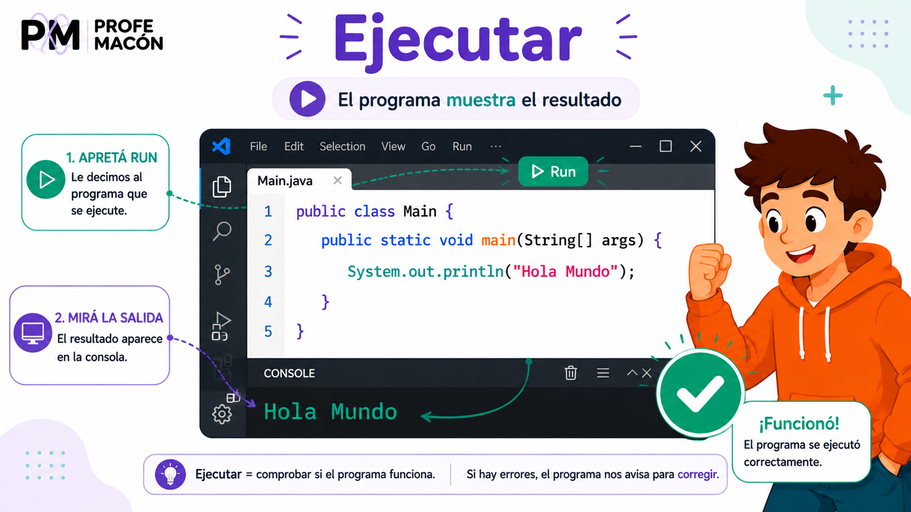
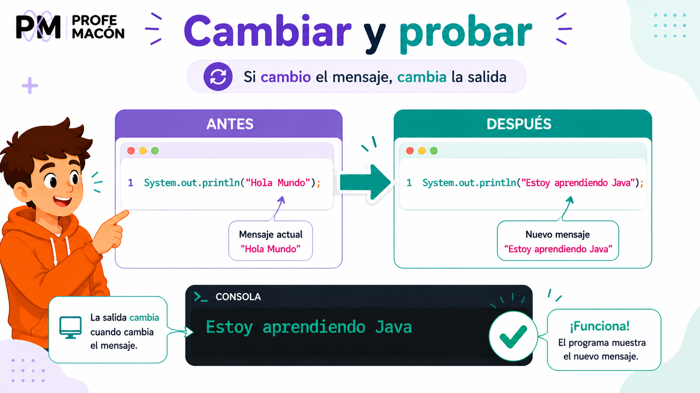
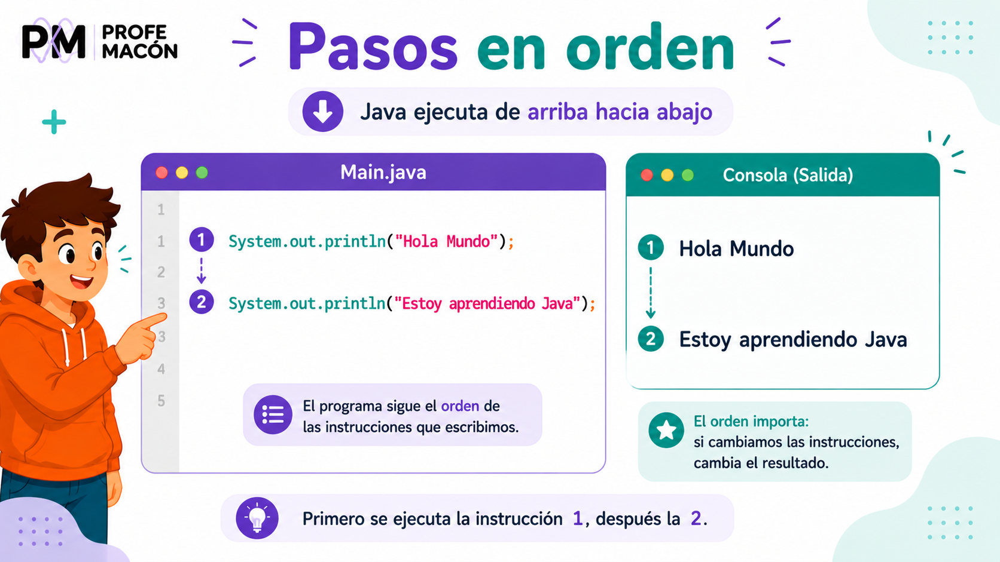

Crear una carpeta para el proyecto
Un proyecto de Java empieza ordenado: primero creamos una carpeta.
Un proyecto simple de Java puede estar dentro de una carpeta. Esa carpeta guarda los archivos que vamos a usar.
Para esta actividad, la carpeta se va a llamar actividad_4_hola_mundo.
Hacé ahora
Creá una carpeta con el nombre actividad_4_hola_mundo.
Respondé
- ¿Cómo se llama la carpeta del proyecto?
- ¿Para qué sirve la carpeta?

Abrir la carpeta en VS Code
VS Code trabaja mejor cuando abrimos la carpeta completa del proyecto.

Abrí Visual Studio Code. Después abrí la carpeta actividad_4_hola_mundo.
Cuando la carpeta está abierta, su nombre aparece a la izquierda, en el explorador de archivos.
Hacé ahora
Abrí la carpeta del proyecto en VS Code.
Respondé
- ¿Qué nombre aparece en el explorador de VS Code?
- ¿La carpeta está vacía o ya tiene archivos?
Crear el archivo Main.java
El primer archivo Java de este proyecto se va a llamar exactamente Main.java.
Dentro de la carpeta del proyecto, creá un archivo llamado Main.java.
La palabra Main empieza con mayúscula. La parte .java indica que es un archivo de Java.
Hacé ahora
Creá el archivo Main.java dentro de la carpeta.
Respondé
- ¿Cómo se llama el archivo?
- ¿Qué parte del nombre indica que es Java?
- ¿Con qué letra empieza Main?

Escribir la estructura básica
Java necesita una estructura para saber dónde empieza el programa.

Copiá esta estructura dentro del archivo Main.java:
public class Main {
public static void main(String[] args) {
}
}En esta estructura, class Main indica la clase principal. La palabra main marca el lugar donde empieza el programa.
Las llaves { } marcan bloques. Un bloque indica dónde empiezan y dónde terminan las instrucciones.
Hacé ahora
Copiá la estructura básica en Main.java.
Respondé
- ¿Cómo se llama la clase?
- ¿Dónde empieza el programa?
- ¿Qué símbolos marcan el inicio y el final de un bloque?
Mostrar un mensaje con println
La instrucción System.out.println muestra texto en pantalla.
Ahora vamos a escribir una instrucción dentro de main. La instrucción será:
System.out.println("Hola Mundo");El texto "Hola Mundo" va entre comillas porque es un mensaje. El punto y coma ; indica que la instrucción terminó.
public class Main {
public static void main(String[] args) {
System.out.println("Hola Mundo");
}
}Hacé ahora
Agregá System.out.println("Hola Mundo"); dentro de main.
Respondé
- ¿Qué mensaje va a mostrar el programa?
- ¿Por qué el mensaje está entre comillas?
- ¿Con qué símbolo termina la instrucción?

Ejecutar el programa
Ejecutar significa decirle al programa que empiece a funcionar.

En VS Code puede aparecer un botón verde llamado Run o una opción llamada Run Java.
Al ejecutar el programa, se abre una consola simple y aparece el resultado.
Hola MundoHacé ahora
Ejecutá el programa y mirá la salida.
Respondé
- ¿Qué apareció en pantalla?
- ¿Coincide con el mensaje que escribiste?
- Si no apareció, ¿qué revisarías primero?
Cambiar el mensaje y volver a probar
Si cambiamos la instrucción, también cambia la salida del programa.
Probá cambiar el mensaje original por uno nuevo:
System.out.println("Estoy aprendiendo Java");Después de cambiar el mensaje, ejecutá otra vez. El programa debe mostrar el texto nuevo.
Estoy aprendiendo JavaHacé ahora
Cambiá el mensaje, ejecutá otra vez y mirá qué aparece.
Respondé
- ¿Qué mensaje escribiste?
- ¿Qué apareció en pantalla?
- ¿Qué parte del código cambiaste?

Dos instrucciones en orden
Java ejecuta las instrucciones de arriba hacia abajo.

Un programa puede tener más de una instrucción. En este ejemplo hay dos instrucciones System.out.println.
public class Main {
public static void main(String[] args) {
System.out.println("Hola Mundo");
System.out.println("Estoy aprendiendo Java");
}
}La salida aparece en el mismo orden en que escribimos las instrucciones:
Hola Mundo
Estoy aprendiendo JavaHacé ahora
Agregá dos instrucciones System.out.println y ejecutá el programa.
Respondé
- ¿Qué mensaje aparece primero?
- ¿Qué mensaje aparece después?
- ¿Por qué importa el orden de las instrucciones?
Revisar errores comunes
En Java, los detalles pequeños pueden cambiar todo.
Si el programa no ejecuta, no significa que “está todo mal”. Muchas veces falta una comilla, una llave, una mayúscula o un punto y coma.
System.out.println("Hola Mundo);El texto debe abrir y cerrar comillas.
System.out.println("Hola Mundo")La instrucción debe terminar con ;.
System.out.Println("Hola Mundo");En Java, println va con minúscula.
Hacé ahora
Revisá tu código antes de entregar.
Respondé
- ¿Tu mensaje tiene comillas al inicio y al final?
- ¿La instrucción termina con ;?
- ¿Escribiste println con minúscula?
Para cerrar
Hoy creaste tu primer programa en Java. Aprendiste a organizar un proyecto, crear el archivo Main.java, escribir la estructura básica, mostrar mensajes con System.out.println y ejecutar para mirar la salida.